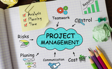

Favourite subjects
Business Fundamentals
Business Fundamentals was my favourite subject because there is a techological business I would like to pursue. I learnt the basic skills and concepts needed to run an organization. By fully comprehending how a business operates, you have a better idea of how different business functions relate and how your decisions impact the organization as a whole.

Information Technology Management
This is what I learnt from this module - Information Technology management refers basically to monitoring and administration of an organization's information technology systems: hardware, software and networks. IT management focuses on how to make information systems operate effectively and efficiently.

Project Management
What I learnt from this subject was that Project Managers are responsible for planning, organizing, and directing the completion of specific projects for an organization while ensuring these projects are on time, on budget, and within scope. I also learnt that this does not only help organizations but also individuals to organize themselves in self management.
